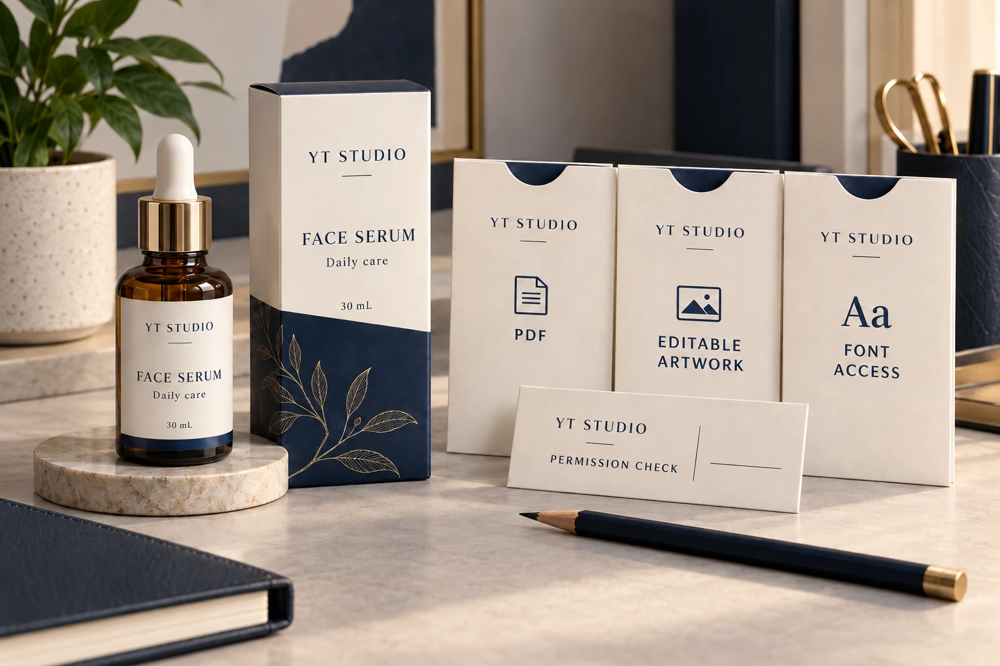
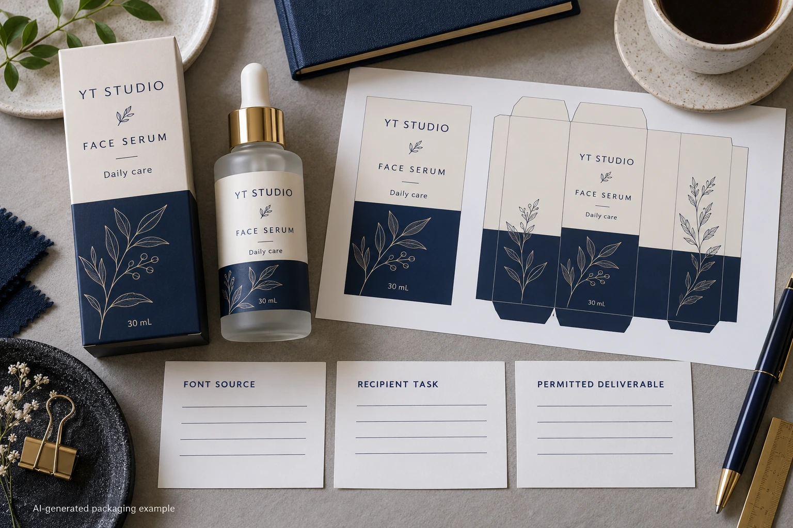

An artwork package is not automatically permitted to contain every font used by the designer. Before sending font software to a printer, identify its source, applicable licence and the receiving party's actual editing need. A correctly embedded PDF and a folder of transferable font files are different deliverables.
For a brand project manager, the decision is which legitimate handoff can support the print job. Do not ask an agency to copy font files merely because another supplier's checklist says package all assets. Resolve the particular font and recipient arrangement, then keep the accepted production export identifiable.

Separate artwork use from access to font software
Adobe Fonts' licensing FAQ, updated March 27, 2026, permits commercial artwork and packaging within its stated terms. It distinguishes properly embedded or outlined deliverables from transferring font software, and says a printer needing direct font access requires its own appropriate licence. Those statements concern fonts obtained through Adobe Fonts; other installed fonts have their own agreements.
Use that distinction to frame the question, not as a blanket rule for every foundry. Ask the designer to identify the actual font source and applicable terms. Where the permitted route is unclear, have the licence holder clarify it with the licensor or the appropriate adviser before distribution. This guide does not interpret an unseen contract.
The practical question is more specific than “can we print this typeface?” It is whether the proposed files, recipient and use are allowed, and whether the receiver actually needs editable access. Record those facts before choosing a deliverable route.
Ask what the printer needs to do
If the printer only needs to reproduce a controlled, approved export, ask whether an appropriately prepared PDF meets its workflow. If it must edit live text, identify that editing requirement explicitly and ask how direct font access will be licensed.
Do not assume that converting text to outlines is always necessary or always permitted under every agreement. Have the designer and receiver confirm the legitimate, technically suitable route for the actual font. Preserve the controlled editable source with its proper owner and review the resulting production file again.
The PDF font-check guide covers appearance, embedding observations and character checks in the delivered export. Those technical checks remain necessary, but they do not establish that copying the underlying font software to another party is allowed.
Build a font-to-recipient record
Use one row for each relevant font or family whose handoff needs clarification. This editorial record is an administrative aid, not a substitute for the applicable licence terms.
| Field | Input to identify | Next decision |
|---|---|---|
| Font identity | Actual name, version or source reference | Which software or asset is involved? |
| Source and holder | Acquisition route and licence holder | Who can confirm the applicable permission? |
| Receiver's task | Print controlled output or edit live text | Is direct font access actually needed? |
| Proposed deliverable | PDF, permitted outlines or licensed editable arrangement | Which route supports the job? |
| Permission evidence | Relevant terms or licensor clarification | Is that particular transfer or use supported? |
| Production control | Export revision and technical acknowledgement | Which permitted file will be printed? |
First identify the fonts and receiver's task. Have the licence holder confirm the relevant permission, then agree the deliverable with prepress. Prepare and inspect that deliverable, preserving both the permission reference and the accepted export. Keep confidential contract details under the team's normal controls rather than adding them to public artwork.
Stop the font-file transfer if its source or permission is unknown. That does not necessarily mean the entire project must stop: a legitimate controlled-output route or separately licensed recipient arrangement may still be available. Obtain confirmation before treating an alternative as resolved.

Two legitimate jobs can need different file packages
Consider a hypothetical unchanged label export that the receiver has agreed to reproduce without editing live text. A suitable permitted production PDF may meet that scope. Sending an extra font folder could add an unnecessary distribution question without helping the print task.
Now consider a program where the receiving studio must create approved language variations in live artwork. That is a different access requirement. The parties may need their own licensed installation or another confirmed arrangement, followed by the usual content and export reviews. The first project's deliverable decision cannot simply be copied across.
Do not send an outlined file and continue promising that the receiver can revise its live text as before. Explain the actual editing limitations and keep the source owner available for future changes. A permitted file that does not support the agreed job still leaves a handoff gap.
Preserve the distinction during reorders and supplier changes
A new printer is a new recipient. A new agency, font source or editing scope can also change the permission question. Review relevant changes instead of assuming the old package is universally portable. Equally, do not reopen every unchanged administrative detail without a reason when the established route and permissions remain identifiable.
Link the final package to the printer-transfer record. Keep production files, reference-only assets and any permitted editable materials clearly named. A folder called final does not tell the recipient which files it may install, edit or reproduce.
Technical quality and permission should meet at the same release. Check that the approved words, characters, spacing and layout survived the selected route. A legitimate licensing arrangement does not excuse an incorrect export, and a visually correct export does not settle an unsupported software transfer.
For a cosmetic label inquiry, provide the container, dimensions, quantities, current artwork and the receiver's actual editing requirement. State which source or permission question remains open; do not attach unapproved font software. The form prepares a message, while authorized files can be shared separately by email or WhatsApp. Ask for a print handoff that is both permitted and usable.